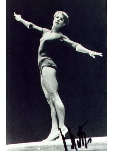

Larissa Latynina (USSR)
1956 and 1960 Olympic AA Champion
1958 and 1962 World AA Champion
1957 and 1961 European AA Champion

Medal Total
Olympic
Games:
9 Gold, 5 Silver, 4 Bronze
World Championships: 9 Gold, 4 Silver, 1 Bronze
European Championships: 7
Gold, 6 Silver, 1 Bronze
Latynina was born on December 27, 1934 in Kherson (Ukrainian SSR). Her father, Semyon, was killed in the battle of Stalingrad, so her mother worked two jobs to support the family. A choreography studio opened in Kherson, and Larissa wanted to be a dancer very badly. Larissa's mother somehow found the 50 rubles a month for tuition. By the time Larissa was in high school, the choreography studio had closed and she discovered gymnastics.
Larissa graduated from high school in 1953 and moved to Kiev to study and train at the Lenin Polytechnic Institute. She was coached by Alexander Mishakov, who also coached Olympic and world champion Boris Shakhlin. Her first major international competition was the 1954 World Championships. Two years later, Larissa won the all-around gold medal at the Melbourne Olympics. Latynina is the only gymnast of either sex to have won medals on every event on the program in two Olympics. She was inducted into the International Women's Sports Hall of Fame in 1985. Larissa is married to Yuri Feldman, her third husband, and they live in Moscow.
Competition Results
1954
USSR Championships: 16th AA, 3rd B, 4th V
World Championships: 1st Team, 14th AA, 5th FX
1955
USSR Championships: 2nd AA, 2nd V, 2nd UB, 2nd B, 3rd FX
USSR Cup: 4th AA
Warsaw International: 1st Team, 1st AA
1956
Liberation Day International: 1st AA, 1st V, 1st FX, 2nd B
Olympics: 1st Team, 1st AA, 1st V,
1st FX, 2nd UB, 4th B
USSR Championships: 4th AA, 1st V, 1st FX, 2nd UB
USSR Cup: 1st AA
1957
European Championships: 1st AA, 1st V,
1st UB, 1st B, 1st FX
Moscow Summer Sports Games: 1st Team, 1st AA
USSR Championships: 2nd AA, 1st FX, 2nd UB, 4th V, 5th B
USSR Cup: 5th AA
1958
USSR Championships: 1st V, 1st B, 1st FX, 5th UB
World Championships: 1st Team, 1st AA,
1st V, 1st UB, 1st B, 2nd FX
1959
GDR-USSR Dual Meet: 1st Team, 3rd AA
USSR Championships: 4th AA, 2nd V, 5th B
1960
Olympics: 1st Team, 1st AA, 1st
FX, 2nd UB, 2nd B, 3rd V
USSR Championships: 2nd AA, 1st V, 2nd UB, 3rd FX, 5th B
USSR Cup: 2nd AA
1961
European Championships: 1st AA, 1st FX,
2nd UB, 2nd B, 4th V
USA-USSR Dual Meet (Pennsylvania): 1st Team, 2nd AA, 1st V, 1st FX,
2nd UB, 3rd B
USSR-USA Dual Meet (Moscow): 1st Team, 1st AA, 1st V, 1st UB, 1st FX
USSR Championships: 1st AA, 1st UB, 2nd V, 3rd B, 3rd FX
USSR Cup: 1st AA
1962
USSR Championships: 1st AA, 1st UB, 2nd FX, 3rd V, 6th B
USSR Cup: 2nd AA
World Championships: 1st Team, 1st AA,
1st FX, 2nd V, 2nd B, 3rd UB
1963
USSR Championships: 2nd AA, 2nd UB, 3rd FX, 5th B
1964
Olympics: 1st Team, 2nd AA, 1st
FX, 2nd V, 3rd UB, 3rd B
SWE-USSR Dual Meet: 1st Team, 4th AA
USSR Championships: 2nd AA, 1st UB, 2nd V, 4th B
USSR Cup: 3rd AA
1965
European Championships: 2nd AA, 2nd UB,
2nd B, 2nd FX, 3rd V
USSR Championships: 7th AA,
1966
USSR Championships: 3rd UB
USSR Cup: 5th AA
USSR World Trials: 6th AA
World Championships: 2nd Team, 11th AA
This page was created on March 12, 2000 and was last
updated on October 30, 2024.
© Gymn Forum